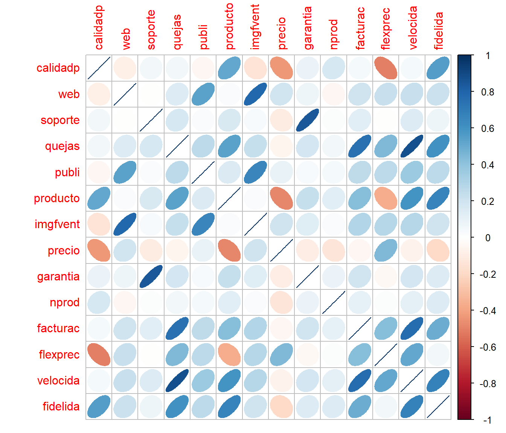
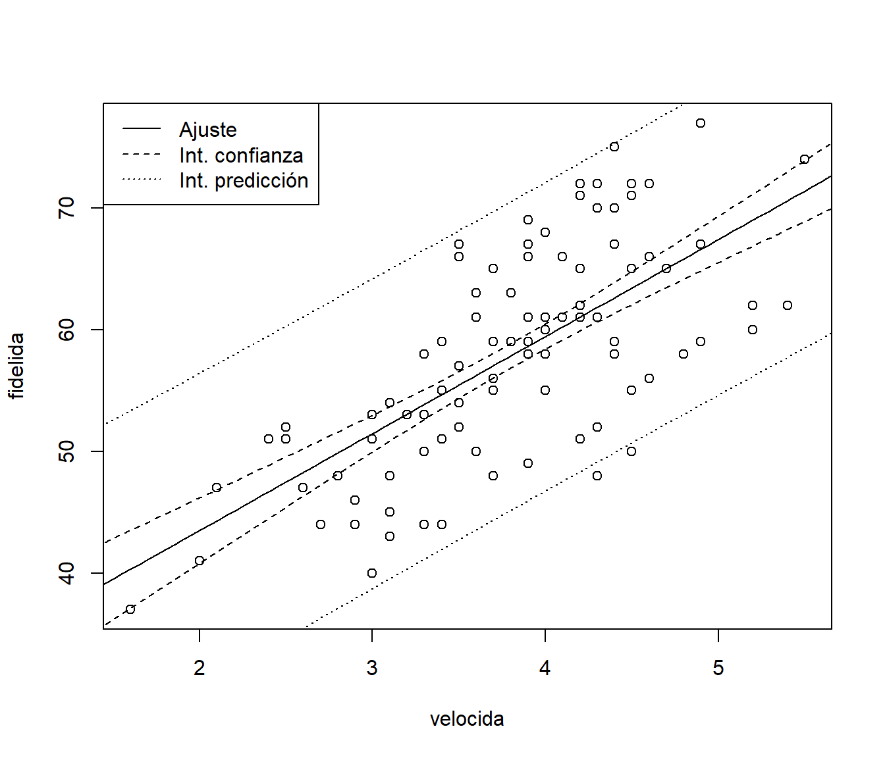

6.1 Regresión lineal múltiple
Como ya se comentó, el método tradicional considera el siguiente modelo: \[\begin{equation} Y = \beta_{0}+\beta_{1}X_{1}+\beta_{2}X_{2}+\cdots+\beta_{p}X_{p} + \varepsilon, \tag{6.1} \end{equation}\] donde \(\left( \beta_{0},\beta_{1},\ldots,\beta_{p}\right)^t\) es un vector de parámetros (desconocidos) y \(\varepsilon\) es un error aleatorio normal de media cero y varianza \(\sigma^2\).
Por tanto las hipótesis estructurales del modelo son:
Linealidad
Homocedasticidad (varianza constante del error)
Normalidad (y homogeneidad: ausencia de valores atípicos y/o influyentes)
Independencia de los errores
Hipótesis adicional en regresión múltiple:
- Ninguna de las variables explicativas es combinación lineal de las demás.
En el caso de regresión múltiple es de especial interés el fenómeno de la colinealidad (o multicolinealidad) relacionado con la última de estas hipótesis (que se tratará en la Sección 6.2). Además se da por hecho que el número de observaciones disponible es como mínimo el número de parámetros, \(n \geq p + 1\).
6.1.1 Ajuste: función lm
El procedimiento habitual para ajustar un modelo de regresión lineal a un conjunto de datos es emplear mínimos cuadrados (ordinarios):
\[\mbox{min}_{\beta_{0},\beta_{1},\ldots,\beta_{p}} \sum\limits_{i=1}^{n}\left( y_{i} - \beta_0 - \beta_1 x_{1i} - \cdots - \beta_p x_{pi} \right)^{2}\]
En R podemos emplear la función lm:
formula: fórmula que especifica el modelo.data: data.frame (opcional) con las variables de la formula.subset: vector (opcional) que especifica un subconjunto de observaciones.weights: vector (opcional) de pesos (mínimos cuadrados ponderados, WLS).na.action: opción para manejar los datos faltantes; por defectona.omit.
Alternativamente se puede emplear la función biglm() del paquete biglm para ajustar modelos lineales a grandes conjuntos de datos (especialmente cuando el número de observaciones es muy grande, incluyendo el caso de que los datos excedan la capacidad de memoria del equipo).
También se podría utilizar la función rlm() del paquete MASS para ajustar modelos lineales empleando un método robusto cuando hay datos atípicos.
6.1.2 Ejemplo
Como ejemplo consideraremos el conjunto de datos hbat.RData que contiene observaciones de clientes de la compañía de distribución industrial HBAT (Hair et al., 1998). Las variables se pueden clasificar en tres grupos: las 6 primeras (categóricas) son características del comprador, las variables de la 7 a la 19 (numéricas) miden percepciones de HBAT por parte del comprador y las 5 últimas son posibles variables de interés (respuestas).
## attr(hbat, "variable.labels")
## empresa Empresa
## tcliente Tipo de cliente
## tindustr Tipo Industria
## tamaño Tamaño de la empresa
## region Región
## distrib Sistema de distribución
## calidadp Calidad de producto
## web Actividades comercio electrónico
## soporte Soporte técnico
## quejas Resolución de quejas
## publi Publicidad
## producto Línea de productos
## imgfvent Imagen de fuerza de ventas
## precio Nivel de precios
## garantia Garantía y reclamaciones
## nprod Nuevos productos
## facturac Encargo y facturación
## flexprec Flexibilidad de precios
## velocida Velocidad de entrega
## satisfac Nivel de satisfacción
## precomen Propensión a recomendar
## pcompra Propensión a comprar
## fidelida Porcentaje de compra a HBAT
## alianza Consideraría alianza estratégicaConsideraremos como respuesta la variable fidelida y, por comodidad, únicamente las variables continuas correspondientes a las percepciones de HBAT como variables explicativas (para una introducción al tratamiento de variables predictoras categóricas ver por ejemplo la Sección 8.5 de Fernández-Casal et al., 2019).
Como ya se comentó, se trata de un método clásico de Estadística y el procedimiento habitual es emplear toda la información disponible para construir el modelo y posteriormente (asumiendo que es el verdadero) utilizar métodos de inferencia para evaluar su precisión. Sin embargo seguiremos el procedimiento habitual en AE y particionaremos los datos en una muestra de entrenamiento y en otra de test.
df <- hbat[, c(7:19, 23)] # Nota: realmente no copia el objeto...
set.seed(1)
nobs <- nrow(df)
itrain <- sample(nobs, 0.8 * nobs)
train <- df[itrain, ]
test <- df[-itrain, ]
# plot(train)
mcor <- cor(train)
corrplot::corrplot(mcor, method = "ellipse")
## calidadp web soporte quejas publi producto imgfvent precio garantia
## calidadp 1.00 -0.088 0.051 0.05 -0.05 0.51 -0.15 -0.43 0.09
## web -0.09 1.000 -0.009 0.14 0.53 0.03 0.79 0.20 0.08
## soporte 0.05 -0.009 1.000 0.17 0.03 0.17 0.04 -0.11 0.84
## quejas 0.05 0.144 0.172 1.00 0.27 0.53 0.23 -0.06 0.19
## publi -0.05 0.534 0.026 0.27 1.00 0.15 0.66 0.10 0.04
## producto 0.51 0.027 0.166 0.53 0.15 1.00 0.02 -0.48 0.23
## imgfvent -0.15 0.787 0.038 0.23 0.66 0.02 1.00 0.20 0.14
## precio -0.43 0.196 -0.109 -0.06 0.10 -0.48 0.20 1.00 -0.10
## garantia 0.09 0.079 0.841 0.19 0.04 0.23 0.14 -0.10 1.00
## nprod 0.17 -0.049 0.017 0.06 0.05 0.13 0.03 -0.14 0.09
## facturac 0.04 0.209 0.128 0.74 0.26 0.42 0.30 -0.05 0.20
## flexprec -0.51 0.221 -0.005 0.44 0.27 -0.36 0.29 0.45 -0.03
## velocida 0.04 0.227 0.142 0.88 0.36 0.60 0.29 -0.07 0.18
## fidelida 0.55 0.219 0.070 0.61 0.27 0.67 0.21 -0.19 0.14
## nprod facturac flexprec velocida fidelida
## calidadp 0.17 0.04 -0.509 0.04 0.55
## web -0.05 0.21 0.221 0.23 0.22
## soporte 0.02 0.13 -0.005 0.14 0.07
## quejas 0.06 0.74 0.444 0.88 0.61
## publi 0.05 0.26 0.266 0.36 0.27
## producto 0.13 0.42 -0.364 0.60 0.67
## imgfvent 0.03 0.30 0.285 0.29 0.21
## precio -0.14 -0.05 0.449 -0.07 -0.19
## garantia 0.09 0.20 -0.030 0.18 0.14
## nprod 1.00 0.10 0.015 0.12 0.14
## facturac 0.10 1.00 0.428 0.77 0.50
## flexprec 0.01 0.43 1.000 0.52 0.05
## velocida 0.12 0.77 0.515 1.00 0.68
## fidelida 0.14 0.50 0.055 0.68 1.00En este caso observamos que aparentemente hay una relación (lineal) entre la respuesta y algunas de las variables explicativas (que en principio no parece adecuado suponer que son independientes).
Si consideramos un modelo de regresión lineal simple, el mejor ajuste se obtendría empleando velocida como variable explicativa:
##
## Call:
## lm(formula = fidelida ~ velocida, data = train)
##
## Residuals:
## Min 1Q Median 3Q Max
## -13.8349 -4.3107 0.3677 4.3413 12.3677
##
## Coefficients:
## Estimate Std. Error t value Pr(>|t|)
## (Intercept) 27.5486 2.6961 10.22 <2e-16 ***
## velocida 7.9736 0.6926 11.51 <2e-16 ***
## ---
## Signif. codes: 0 '***' 0.001 '**' 0.01 '*' 0.05 '.' 0.1 ' ' 1
##
## Residual standard error: 6.403 on 158 degrees of freedom
## Multiple R-squared: 0.4562, Adjusted R-squared: 0.4528
## F-statistic: 132.6 on 1 and 158 DF, p-value: < 2.2e-16
Para calcular predicciones (estimaciones de la media condicionada), también intervalos de confianza o de predicción, se puede emplear la función predict() (consultar la ayuda help(predict.lm) para ver todas las opciones disponibles).
valores <- seq(1, 6, len = 100)
newdata <- data.frame(velocida = valores)
pred <- predict(modelo, newdata = newdata, interval = c("confidence"))
# head(pred)
plot(fidelida ~ velocida, train)
matlines(valores, pred, lty = c(1, 2, 2), col = 1)
pred2 <- predict(modelo, newdata = newdata, interval = c("prediction"))
matlines(valores, pred2[, -1], lty = 3, col = 1)
legend("topleft", c("Ajuste", "Int. confianza", "Int. predicción"), lty = c(1, 2, 3))
Para la extracción de información se pueden acceder a los componentes del modelo ajustado o emplear funciones (genéricas; muchas de ellas válidas para otro tipo de modelos: rlm, glm…). Algunas de las más utilizadas son las siguientes:
| Función | Descripción |
|---|---|
fitted |
valores ajustados |
coef |
coeficientes estimados (y errores estándar) |
confint |
intervalos de confianza para los coeficientes |
residuals |
residuos |
plot |
gráficos de diagnóstico |
termplot |
gráfico de efectos parciales |
anova |
calcula tablas de análisis de varianza (también permite comparar modelos) |
influence.measures |
calcula medidas de diagnóstico (“dejando uno fuera”; LOOCV) |
update |
actualiza un modelo (p.e. eliminando o añadiendo variables) |
Ejemplos (no evaluados):
References
Fernández-Casal, R., Roca-Pardiñas, J., y Costa, J. (2019). Introducción al Análisis de Datos con R. https://rubenfcasal.github.io/intror
Hair, J. F., Anderson, R. E., Tatham, R. L., y Black, W. (1998). Multivariate Data Analysis. Prentice Hall.